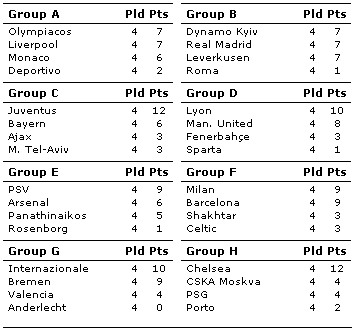

UEFA Champions League is considered as the worlds greatest football club
competition. The top teams from the best leagues of Europe win the right to
participate in this contest. The number of teams that will participate in the
Champions League is decided by the UEFA coefficient ranking system. This system
takes individual club performances in Europe and performance of all the clubs
of a country into account. So the number of clubs participating in the
Champions league is not necessarily proportional to the number of teams
competing in the domestic league.

The table to the left shows the standings of the group stages of Champions League
after 4 games have been played. As we can see, there are 4 teams from the
English Premier League (Liverpool, Manchester United, Arsenal and Chelsea), 4
teams from Spanish Primera Liga (Deportivo, Real Madrid, Barcelona and
Valencia), 4 teams from Italian Serie A (Roma, Juventus, Inter and Milan) but
only 3 teams from German Bundes Liga (Leverkusen, Bayern, Bremen). Now the
numbers of teams that play in those domestic leagues are not equal (20 in
Premier League, 18 in Serie A), nor do they have a uniform ranking rule. For
example in Primera Liga if two teams are tied in points then the goal
difference comes as a deciding factor. But for the Champions League itself, a
tie in points is broken by the number of goals scored. What has remained to be
uniform in the league rules is that a win would earn 3 points for a team, a
draw would earn 1 and a loss would earn nothing. It is also a tradition to have
the teams play each other twice on a home and away basis. But at times it may
be required to have the league played in half a season, when theyd play with
each other only once.
Now keeping all these anomalies in mind, we are interested
to find the minimum point that a team can score and be lucky enough to qualify.
You would be given the number of teams - T, the number of times they would play
each other - V, and the number of teams that can qualify - Q. To avoid the
differences in the tie-breaking rules we would like to see our qualifying teams
get at least one point more than the ones that are left out. For example, in a
league that has only 4 teams who play each other twice if we are to choose 2
qualifiers, we would say that the 2nd team would require at least 5 points to
qualify. This 5-point difference is the minimum bar that a team should reach if
they are to have any hope of moving on.
There can be multiple test cases. The first line of input gives
you the number of test cases, T (
1 T100). Each of the next T lines would give you the input
for each of the test cases. N (
1 < N20), V (
1V4) and Q (
1QN)
are the three integers comprising one test case.
For each of the test case, you need to print one line of output.
The output for each test case should start with the serial number of the
league, followed by the minimum possible point for a qualifying team.
T100). Each of the next T lines would give you the input
for each of the test cases. N (
1 < N20), V (
1V4) and Q (
1QN)
are the three integers comprising one test case.
For each of the test case, you need to print one line of output.
The output for each test case should start with the serial number of the
league, followed by the minimum possible point for a qualifying team.
3
2 2 1
3 3 3
4 3 2
League 1: 4
League 2: 0
League 3: 7
Miguel Revilla
2004-12-02